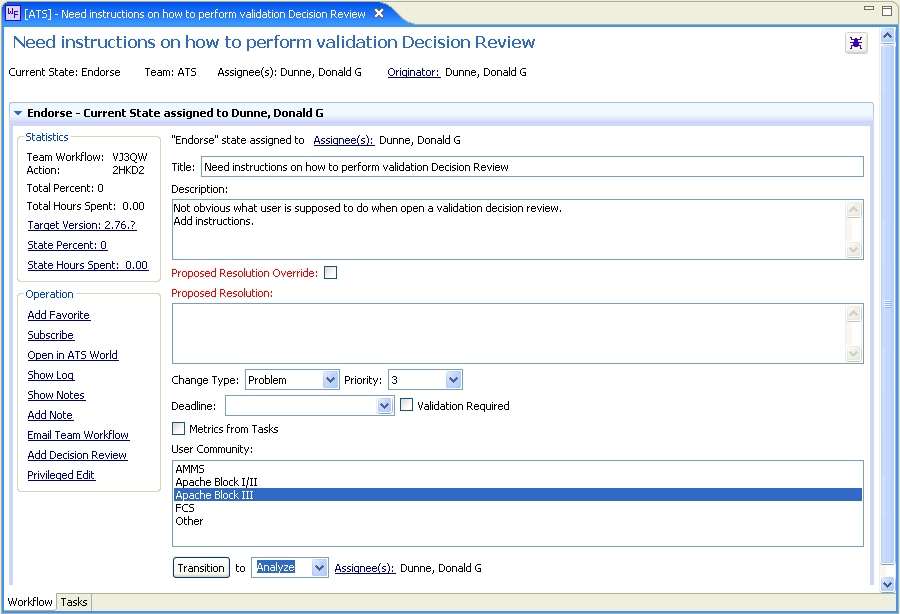

ATS Workflow Editor

Purpose
Show and edit the workflows configured for use in ATS including Team Workflows, Tasks and Reviews.
How to do it
Double-click open any Action or Team Workflow from ATS World, Search results or ATS Results.
The editor will be opened allowing view and edit of workflow.
Shows states of workflow, alows entry in current state and provides services to perform actions,
see metrics and research information about workflow.
Shows tasks associated with states of workflow. Allows quick editing of task information and
allows a quick jump (double-click) to open task in ATS Workflow Editor.